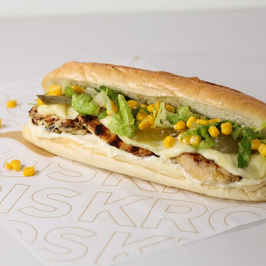

Silva's Francisco Chicken

Marinated Chicken with mayo, corn, and lettuce all in a sub roll. Quick and easy!
Origins unknown but prevalent and loved by most in Lebanon.
Ingredients
- [12" | 30.5 centimeter} Sub Roll
- [1.2 pounds | 0.5 kilograms} of Chicken Breast (for every 3 sub rolls)
- [2 Tablespoons] of Olive Oil
- [1 teaspoon] of Black Pepper
- [1 teaspoon] of Soya Sauce
- [1 Tablespoon] of Mayonnaise per Sub Roll
- [1 teaspoon] of Salt
- [1 small can] of Corn
- [1 Large] Onion
- [1 clove] of Garlic
- [250 milligrams] of Mozzarella/Kashkaval/mixed Cheese(again, for every 3 sub rolls)
- Salivary Glands
Steps
- Cut the Chicken Breast and oil it up with the Olive Oil
- Add Onion and Garlic and mix the combo
- Add the Corn, Soya Sauce, and salt and mix the resulting combo
- Fry the mix for 15-20 minutes
- Add Mayonnaise and Lettuce to the Sub Roll and finally add the Chicken
- Let those salivary glands drool over the bread